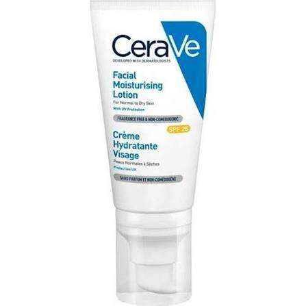

Deze cleanser is ideaal voor studenten die een zachte, simpele maar effectieve routine willen. De formule reinigt het gezicht zonder te irriteren en verwijdert make-up, vuil en olie op een milde manier. Wat dit product bijzonder maakt, is dat het drie essentiële ceramiden bevat. Deze zorgen ervoor dat de huidbarrière sterk blijft - iets wat veel jongeren nodig hebben door stress, weinig slaap en onregelmatige verzorging. Hyaluronzuur hydrateert de huid al tijdens het wassen, waardoor de huid niet strak of droog aanvoelt. De niet-schuimende textuur maakt het extra geschikt voor gevoelige of droge huidtypes.